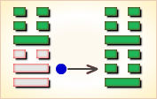

周易第54卦_归妹卦(雷泽归妹)_震上兑下
如有疑问互相交流，微信：470283584
周易第54卦详解
归妹卦原文
归妹。征凶，无攸利。
象曰：泽上有雷，归妹。君子以永终知敝。
白话文解释
归妹卦：筮遇此爻，出征凶险。无所利。
《象辞》说：归妹之卦，下卦为兑，兑为泽；上卦为震，震为雷。可见泽上雷鸣，雷鸣水动，用以喻男女心动相爱而成眷属。这是归妹卦的卦象。君子观此卦象，从而在长期的婚姻生活中，体察到婚姻的成功与失败。
《断易天机》解
归妹卦震上兑下，为兑宫归魂卦。占得此卦，天地不交，闭塞不通，有殃有咎，无始无终，所作不顺，百事不利。
北宋易学家邵雍解
违反常理，其道将穷；明察事理，止绝妄念。
得此卦者，困难之时，做事有违常理，灾祸不断。宜明察事理，修身养性，断绝妄念。
台湾国学大儒傅佩荣解
时运：进不以道，难以持久。
财运：货价尚可，结局未必。
家宅：已婚不宜居母家；勿眈情欲。
身体：大限将至。
传统解卦
这个卦是异卦（下兑上震）相叠。震为动、为长男；兑为悦、为少女。以少女从长男，产生爱慕之情，有婚姻之动，有嫁女之象，故称归妹。
大象：震长男在上，兑少女在下，女必归从，归即是出嫁，但少女配长男，非正常组合。
运势：处事有违常理正道，先得其益，但随后祸事百端。
事业：正在进入新的阶段，很快将会出现另一番景象。这时首先必须具备远大眼光，识破利弊和吉凶，有备始能无患。其次是坚守纯正的品德和正确的原则。
经商：开拓新的市场即将成功，在未来的商业活动中必须注意经营的方向和种类，加强与他人合作。
求名：务必以坚定的决心，努力提高自己，为成名立业奠定基础，最可怕是儿女情长影响了自己的前途和事业。
婚恋：顺其自然，不可违背原则，尤其不可强求，宁可晚婚也要选择理想的对象。夫妻经过生活考验，可和谐到老。
决策：对于人生必须坚持公正纯洁的品德，正确对待婚姻和家庭，以幸福美满的家庭为基础，开拓和发展自己的事业。
台湾张铭仁解卦
归妹：表示小妹急着先出嫁，为感情冲动、不理智之象。得此卦投资、升迁、合伙，大概与男女之间的感情用事，会有很大的关连。感情，第三者积极介入之象，或是自己一厢情愿冲动的妄想。
解释：精神恍惚。
特性：具有同情心，喜欢结交朋友，爱热闹，贵人运多，恋爱运早，喜追求变化性工作，容易转换工作，多学不专。
运势：祸出百端，事物有违常理。初时有悦，不久反凶，祸害随至。
家运：外观风光幸福，其实家内正起风波，有失和、祸害等不幸情况。
疾病：病危重，极易恶化，为中风、肝病、气管及性病等。
胎孕：无碍。秋占不利。
子女：儿女有沉于情欲之中者。
周转：希望渺小。
买卖：表面上不错，其实亏了老本。
等人：不会来。
寻人：在东方或西方。
失物：失物虽有被归还的可能，但自身仍有损失。
外出：十分顺利，即便发生意外也会有人相助。
考试：有重新再读一年之况。
诉讼：事牵连于女性，宜力求和解，但我方必有损失。
求事：放弃算了，再另做打算。
改行：不宜。
开业：开业者宜暂停，静候时机。
周易第54卦初九爻详解
初九爻辞
初九。归妹以娣，跛能履，征吉。
象曰：归妹以娣，以恒也。跛能履吉，相承也。
白话文解释
初九：嫁女而将其妹妹一同陪嫁。跛脚而能行走。筮遇此爻，出行吉利。
《象辞》说：嫁女而将其妹妹一同陪嫁，是说姊妹共嫁一夫，这是古代贵族婚嫁的常规。跛脚而能行走，出行吉利，因为跛者获得别人的帮助。
北宋易学家邵雍解
吉：得此爻者，有小德，谋望顺遂。做官的或有政绩。
台湾国学大儒傅佩荣解
时运：因人成事，乏善可陈。
财运：奉命而行，幸可获利。
家宅：偏屋亦吉。
身体：不良于行。
初九变卦

初九爻动变得周易第40卦：雷水解。这个卦是异卦（下坎上震）相叠。震为雷、为动；坎为水、为险。险在内，动在外。严冬天地闭塞，静极而动。万象更新，冬去春来，一切消除，是为解。
周易第54卦九二爻详解
九二爻辞
九二。眇能视，利幽人之贞。
象曰：利幽人之贞，未变常也。
白话文解释
九二：眼睛瞎了而能看得见。这是利于囚徒的贞卜。
《象辞》说：这是利于囚徒的贞卜，因为身处囚笼尚不失正道，故能重见光明。
北宋易学家邵雍解
平：得此爻者，不宜进取，守旧者则祸害不生。
台湾国学大儒傅佩荣解
时运：不必幻想，安心修养。
财运：独到之见，暗中得利。
家宅：适合隐居；偏房为宜。
身体：保养眼睛。
九二变卦

九二爻动变得周易第51卦：震为雷。这个卦是同卦（下震上震）相叠。震为雷，两震相叠，反响巨大，可消除沉闷之气，亨通畅达。平日应居安思危，怀恐惧心理，不敢有所怠慢，遇到突发事变，也能安然自若，谈笑如常。
周易第54卦六三爻详解
六三爻辞
六三。归妹以须，反归以娣。
象曰：归妹以须，未当也。
白话文解释
六三：嫁女而用其姊陪嫁，随后又与其妹妹返归父母家。
《象辞》说：嫁女而用其姊陪嫁，这件事不妥当。
北宋易学家邵雍解
凶：得此爻者，进退无常，劳役悲苦。做官的有被降职之忧。
台湾国学大儒傅佩荣解
时运：受人抑制，忍耐一时。
财运：眼前无利，可图未来。
家宅：不是正宅；不是正娶。
身体：待时可愈。
六三变卦
六三爻动变得周易第34卦：雷天大壮。这个卦是异卦（下乾上震）相叠。震为雷；乾为天。乾刚震动。天鸣雷，云雷滚，声势宏大，阳气盛壮，万物生长。刚壮有力故曰壮。大而且壮，故名大壮。四阳壮盛，积极而有所作为，上正下正，标正影直。
周易第54卦九四爻详解
九四爻辞
九四。归妹愆期，迟归有时。
象曰：愆期之志，有待而行也。
白话文解释
九四：出嫁时超过了婚龄，迟迟不嫁是因为有所等待。
《象辞》说：超龄而不嫁，因为她决意找到合意的郎君。
北宋易学家邵雍解
平：得此爻者，不是佳期，须待时运。
台湾国学大儒傅佩荣解
时运：行运有时，不宜躁进。
财运：待时而动，自可获利。
家宅：暂勿迁居；须待时日。
身体：安心静养。
九四变卦

九四爻动变得周易第19卦：地泽临。这个卦是异卦（下兑上坤）相叠。坤为地，兑为泽，地高于泽，泽容于地。喻君主亲临天下，治国安邦，上下融洽。
周易第54卦六五爻详解
六五爻辞
六五。帝乙归妹，其君之袂，不如其娣之袂良。月几望，吉。
象曰：帝乙归妹，不如其娣之袂良也。其位在中，以贵行也。
白话文解释
六五：帝乙嫁女于周文王，以其次女陪嫁。论嫁妆姊的不如妹的好。良辰择在某月十四日，吉利。
《象辞》说：帝乙嫁女于周文王，姊的嫁妆不如妹的好。六五之爻居上卦中位，像女嫁夫家处于尊贵之位。
北宋易学家邵雍解
吉：得此爻者，正值好运，或成婚，或得财。做官的会受到重用，身居要职。
台湾国学大儒傅佩荣解
时运：谦虚得福，联袂上进。
财运：后货较优，早售有利。
家宅：喜事临门；二女同归。
身体：半月可愈。
六五变卦

六五爻动变得周易第58卦：兑为泽。这个卦是同卦（下泽上泽）相叠。泽为水。两泽相连，两水交流，上下相和，团结一致，朋友相助，欢欣喜悦。兑为悦也。同秉刚健之德，外抱柔和之姿，坚行正道，导民向上。
周易第54卦上六爻详解
上六爻辞
上六。女承筐无实，士刲羊无血，无攸利。
象曰：上六无实，承虚筐也。
白话文解释
上六：献祭之时，新娘捧着盛祭品的筐具，但筐中无物；新郎以刀刺羊，但羊不流血。此不祥之兆，无所利。
《象辞》说：上六之爻居一卦之尽头，孤悬无所依赖，正宜其捧着空空的筐具。
北宋易学家邵雍解
凶：得此爻者，事多不顺，营谋皆空。做官的居虚位而无实禄。
台湾国学大儒傅佩荣解
时运：诸事不顺，小心为宜。
财运：本虚货缺，如何得利。
家宅：须防纷争；婚娶不正。
身体：虚劳失血，不治之象。
上六变卦

上六爻动变得周易第38卦：火泽睽。这个卦是异卦（下兑上离）相叠。离为火；兑为泽。上火下泽，相违不相济。克则生，往复无空。万物有所不同，必有所异，相互矛盾。睽即矛盾。